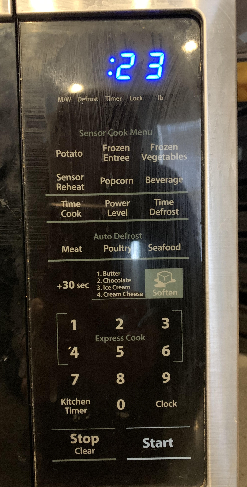

Project 1: Microwave Interface
Section C: My Microwave Interface

Microwave Control Panel

Issues With Current Design
- There are 5 labels underneath the timer display that are not self-explanitory as to what they represent
- The Sensor Cook Menu is confusing as to how much time or the condition the food needs to be in before the setting to be effective. Does the microwave *sense* the food and type? Or is it just a pre-set?
- The listed items next the Soften picture are confusing. Is that how many times the user should press the +30 sec button to the right of it?
- The Express Cook Label appears to only refer to the number 2 button. The braces around the 1,4 and 3,6 buttons are also confusing.
Section B: Microwave Usage and Proposed Design
Common Microwave Uses
- Cooking Food
- Reheating Food
- Boiling Water
- Defrosting Frozen Food
The inteface makes these common uses cases realtively easy. Most require time-based heating which can be accomplished with simple time settings. The interface falls a little short in having proper timing assocatiated with common food types like potatoes, boiling water.
Rare Microwaves Uses
- Heating beauty products
- De-crystalization science experiments
Common Sequences of Actions
- Place food in oven -> Close Door -> Press Time Cook -> Enter in Time on number pad -> Press Start
- Place food in oven -> Close Door -> Press one of the Express Cook Numbers to cook for the corresponding minutes
- Place food in oven -> Close Door -> Press one of the Express Cook Numbers to cook for the corresponding minutes -> Add 30 secs by pressing the +30sec buttons
User Support and Feedback
- This microwave makes audible beeps" when buttons are pressed
- When the cooking time is complete multiple beeps are sounded to notify the user
- A display shows the current time left in the cooking cycle as well as when a time is being typed in
Common Mistakes Made
- Forgetting that buttons 1-6 are Express Cooking Presets. You must click Time Cook first for setting specific time
- Assuming that the Popcorn preset will cook for the exact correct amount of time. If the bag is smaller you will likely scorch the popcorn
Suggested Improvements to Design
- Eliminate the Sensor Cook Menu all together because the sesnor cooking is not accurate and leaves the food undercooked/overcooked
- Emiminate the "Soften" Picture. It is confusing to the user as to what he/she is supposed to do to use it. It is not a button but merely instructions
- Alter the Express Cook functionality since it can be easy to forget that by pressing the number cooking starts immidiately. Add a button for Express Cook which is then followed by a numbered button selection. This puts the user in a position to always have to choose timed cooking or express cooking
- Add a section for Programable Preset buttons. The user will be able to add a custom name and set the cooking time. Once this is saved, the user will be able to press the button for express cooking
- Keep the +30 button. It is handy for adding extra time when trying to guess at cooking time
- Add letters to the bottom of each numbered button to be used when naming a preset button
- Add a section with step by step instructions for setting a Preset Button

Section A: New Design Microwave Impementation